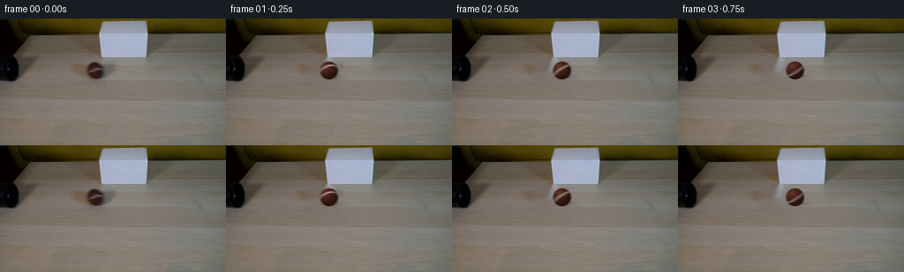
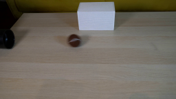
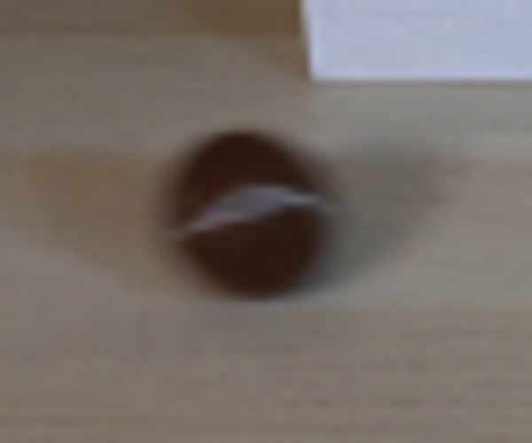
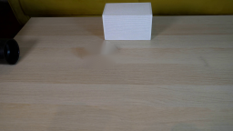
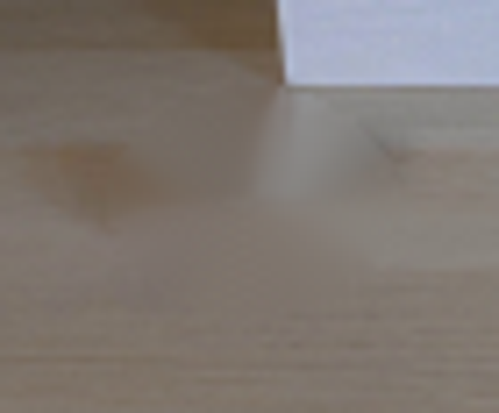
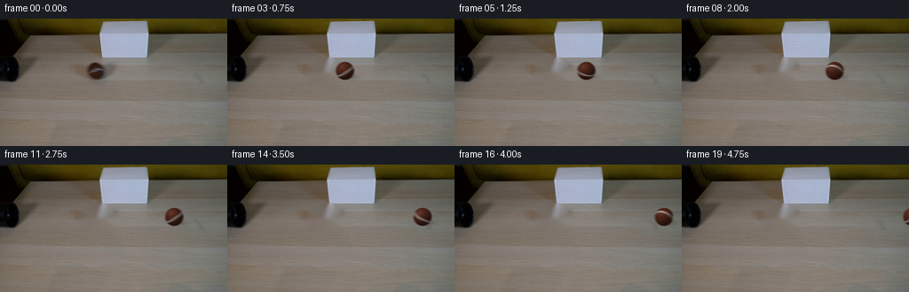
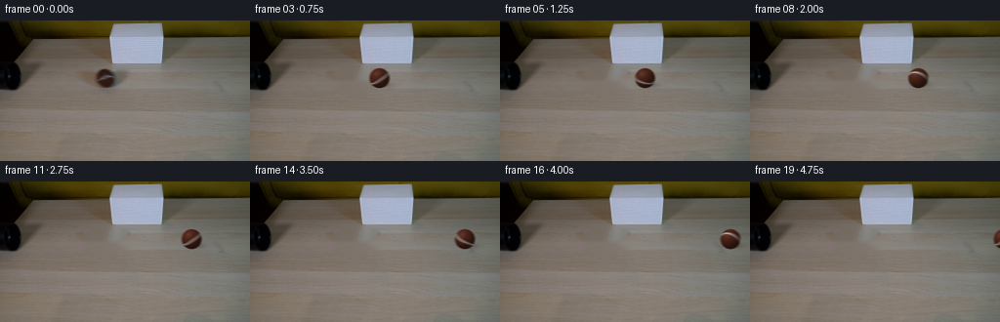

CODING AGENTS AS PIXEL WORLD MODELS
traex/GPT-5.6-Sol · 0149
点击播放 · 原生 RGB 像素
逐轮保存的候选
回放视频、检查图与代码变化。
每份候选均可单独播放。实际图片检查记录在下方工具轨迹中。
候选 01播放与检查图
点击播放 · 原生 RGB 像素


展开代码变化
--- 上一保存版本
+++ 本次保存版本
@@ -0,0 +1,139 @@
+from pathlib import Path
+import numpy as np
+import cv2
+from PIL import Image
+import artifact_io
+
+W, H = 256, 144
+S = 4
+N = 20
+
+
+def clean_plate(rgb):
+ """Remove only the moving ball and its soft cast shadow from the locked shot."""
+ bgr = cv2.cvtColor(rgb, cv2.COLOR_RGB2BGR)
+ mask = np.zeros((H, W), np.uint8)
+ # Includes the faint motion wake at left and the shadow to lower right.
+ cv2.ellipse(mask, (109, 60), (21, 17), 0, 0, 360, 255, -1)
+ plate = cv2.inpaint(bgr, mask, 4, cv2.INPAINT_TELEA)
+ return cv2.cvtColor(plate, cv2.COLOR_BGR2RGB)
+
+
+def composite_shadow(canvas, cx, cy):
+ """A soft contact shadow, slightly displaced away from the upper-left light."""
+ hs, ws = canvas.shape[:2]
+ yy, xx = np.mgrid[0:hs, 0:ws].astype(np.float32)
+ sx, sy = (cx + 3.8) * S, (cy + 6.8) * S
+ # tight dark contact core plus broad ambient penumbra
+ q1 = ((xx-sx)/(11.8*S))**2 + ((yy-sy)/(3.15*S))**2
+ q2 = ((xx-(sx+1.1*S))/(17.0*S))**2 + ((yy-(sy+0.5*S))/(5.8*S))**2
+ alpha = 0.20*np.exp(-2.2*q1) + 0.105*np.exp(-2.0*q2)
+ alpha = np.clip(alpha, 0, .27)[..., None]
+ canvas[:] = canvas*(1-alpha) + np.array([31., 26., 22.], np.float32)*alpha
+
+
+def ball_layer(cx, cy, phase, blur_len=2.5):
+ """Render a small brown felt ball, including its rotating pale curved seam."""
+ # We only calculate a compact patch, at 4x for clean antialiased edges.
+ r = 10.2
+ pad = 15
+ x0 = int(np.floor(cx-pad)); x1 = int(np.ceil(cx+pad))
+ y0 = int(np.floor(cy-pad)); y1 = int(np.ceil(cy+pad))
+ pw, ph = (x1-x0)*S, (y1-y0)*S
+ yy, xx = np.mgrid[0:ph, 0:pw].astype(np.float32)
+ X = xx/S + x0 + 0.5/S
+ Y = yy/S + y0 + 0.5/S
+ premul = np.zeros((ph,pw,3), np.float32)
+ asum = np.zeros((ph,pw), np.float32)
+
+ # Integrate over a short exposure. The result has the same modest lateral
+ # softness as the photographed ball, without changing the fixed scenery.
+ offsets = np.linspace(-blur_len/2, blur_len/2, 7, dtype=np.float32)
+ for off in offsets:
+ u = (X-(cx+off))/r
+ v = (Y-cy)/r
+ rr = u*u+v*v
+ edge = np.clip((1.035-rr)*14.0, 0, 1)
+ inside = rr < 1.08
+ z = np.sqrt(np.clip(1-rr, 0, 1))
+
+ # Directional room light from high left; retain a dark, warm felt body.
+ ndotl = np.clip(-0.46*u - 0.59*v + 0.66*z, 0, 1)
+ shade = 0.47 + 0.53*ndotl
+ base = np.empty((ph,pw,3), np.float32)
+ base[...,0] = 82*shade
+ base[...,1] = 39*shade
+ base[...,2] = 27*shade
+ # restrained warm specular glint and deterministic fine felt variation
+ spec = np.power(np.clip(-0.31*u-0.45*v+0.84*z,0,1), 18)*17
+ grain = 1.0 + 0.035*np.sin((X*2.31 + Y*3.17))*np.sin((X*4.13-Y*1.71))
+ base = base*grain[...,None] + spec[...,None]
+
+ # Rotate the surface about the transverse axis as the ball rolls right.
+ ca, sa = np.cos(phase + off/r), np.sin(phase + off/r)
+ ox = ca*u - sa*z
+ oy = v
+ oz = sa*u + ca*z
+ # A tilted great-circle stripe. Gentle modulation makes it look like
+ # the characteristic curved cloth seam rather than a ruler-straight line.
+ d = 0.11*ox + 0.83*oy + 0.55*oz
+ wav = d + 0.055*np.sin(2.8*ox + 0.55)
+ seam = np.clip((0.115-np.abs(wav))/0.055, 0, 1)
+ # Seam is shaded by the same sphere lighting so it belongs to the ball.
+ seam_rgb = np.stack((176*shade+14, 174*shade+14, 168*shade+18), axis=-1)
+ color = base*(1-seam[...,None]) + seam_rgb*seam[...,None]
+
+ a = edge * inside / len(offsets)
+ premul += color*a[...,None]
+ asum += a
+
+ # The exposure average is already premultiplied; cap overlapping opacity.
+ alpha = np.clip(asum,0,1)
+ rgb = premul / np.maximum(asum[...,None], 1e-5)
+ return x0, y0, rgb, alpha
+
+
+def paste_ball(canvas, cx, cy, phase):
+ x0,y0,rgb,a = ball_layer(cx,cy,phase)
+ hs,ws = canvas.shape[:2]
+ X0,Y0=x0*S,y0*S
+ X1,Y1=X0+rgb.shape[1],Y0+rgb.shape[0]
+ cx0,cy0=max(0,X0),max(0,Y0)
+ cx1,cy1=min(ws,X1),min(hs,Y1)
+ if cx1<=cx0 or cy1<=cy0:
+ return
+ sx0,sy0=cx0-X0,cy0-Y0
+ sx1,sy1=sx0+(cx1-cx0),sy0+(cy1-cy0)
+ aa=a[sy0:sy1,sx0:sx1,None]
+ canvas[cy0:cy1,cx0:cx1] = canvas[cy0:cy1,cx0:cx1]*(1-aa) + rgb[sy0:sy1,sx0:sx1]*aa
+
+
+def make_frames(first):
+ plate = clean_plate(first)
+ plate_hi = np.asarray(Image.fromarray(plate).resize((W*S,H*S), Image.Resampling.LANCZOS), np.float32)
+ frames=[first.copy()] # generation contract: exact source pixels
+ x_start, y = 108.8, 59.1
+ velocity = 7.95 # pixels per frame, constant real-time speed
+ initial_phase = -0.68
+ for i in range(1,N):
+ x = x_start + velocity*i
+ canvas=plate_hi.copy()
+ # Keep drawing the shadow until it naturally leaves the locked frame.
+ if x < W+25:
+ composite_shadow(canvas,x,y)
+ # no-slip rolling: angular displacement equals distance / radius
+ phase = initial_phase + (x-x_start)/10.2
+ paste_ball(canvas,x,y,phase)
+ out = np.asarray(Image.fromarray(np.uint8(np.clip(canvas,0,255))).resize((W,H), Image.Resampling.LANCZOS))
+ frames.append(out)
+ return np.stack(frames).astype(np.uint8)
+
+
+def main():
+ case_dir=Path(__file__).resolve().parent
+ first=np.asarray(Image.open(case_dir/'first_frame.png').convert('RGB'),dtype=np.uint8)
+ frames=make_frames(first)
+ artifact_io.save(frames,case_dir)
+
+if __name__=='__main__':
+ main()
候选 02播放与检查图
点击播放 · 原生 RGB 像素

展开代码变化
--- 上一保存版本
+++ 本次保存版本
@@ -14,7 +14,7 @@
bgr = cv2.cvtColor(rgb, cv2.COLOR_RGB2BGR)
mask = np.zeros((H, W), np.uint8)
# Includes the faint motion wake at left and the shadow to lower right.
- cv2.ellipse(mask, (109, 60), (21, 17), 0, 0, 360, 255, -1)
+ cv2.ellipse(mask, (107, 61), (27, 15), 0, 0, 360, 255, -1)
plate = cv2.inpaint(bgr, mask, 4, cv2.INPAINT_TELEA)
return cv2.cvtColor(plate, cv2.COLOR_BGR2RGB)
可观测工具轨迹
实际执行的命令与返回图片。
命令 1exit 0
/bin/bash -lc "cat prompt.txt && printf '\\n---RULES---\\n' && cat GENERATION_RULES.md"
命令 2exit 0
/bin/bash -lc "find . -maxdepth 2 -type f -printf '%p\\n' | sort"
命令 3exit 0
/bin/bash -lc "python - <<'PY'
from PIL import Image
im=Image.open('first_frame.png').convert('RGB')
print(im.size)
im.resize((1024,576)).save('.tmp/up.png')
PY"命令 4exit 0
/bin/bash -lc "python - <<'PY'
from PIL import Image
im=Image.open('first_frame.png')
im.crop((80,35,140,85)).resize((600,500)).save('.tmp/ballcrop.png')
PY"命令 5exit 0
/bin/bash -lc "python - <<'PY'
import cv2, numpy as np
im=cv2.imread('first_frame.png')
mask=np.zeros(im.shape[:2],np.uint8)
cv2.ellipse(mask,(110,60),(20,16),0,0,360,255,-1)
for meth,name in [(cv2.INPAINT_TELEA,'telea'),(cv2.INPAINT_NS,'ns')]:
out=cv2.inpaint(im,mask,4,meth)
cv2.imwrite(f'.tmp/{name}.png',out)
out[mask==0]=im[mask==0]
cv2.imwrite(f'.tmp/{name}2.png',out)
PY"命令 6exit 0
/bin/bash -lc "sed -n '1,240p' artifact_io.py && python - <<'PY'
from PIL import Image
im=Image.open('.tmp/telea.png')
im.crop((75,32,145,90)).resize((700,580)).save('.tmp/bg_crop.png')
PY"命令 7exit 0
/bin/bash -lc "cat > generate.py <<'PY'
from pathlib import Path
import numpy as np
import cv2
from PIL import Image
import artifact_io
W, H = 256, 144
S = 4
N = 20
def clean_plate(rgb):
\"\"\"Remove only the moving ball and its soft cast shadow from the locked shot.\"\"\"
bgr = cv2.cvtColor(rgb, cv2.COLOR_RGB2BGR)
mask = np.zeros((H, W), np.uint8)
# Includes the faint motion wake at left and the shadow to lower right.
cv2.ellipse(mask, (109, 60), (21, 17), 0, 0, 360, 255, -1)
plate = cv2.inpaint(bgr, mask, 4, cv2.INPAINT_TELEA)
return cv2.cvtColor(plate, cv2.COLOR_BGR2RGB)
def composite_shadow(canvas, cx, cy):
\"\"\"A soft contact shadow, slightly displaced away from the upper-left light.\"\"\"
hs, ws = canvas.shape[:2]
yy, xx = np.mgrid[0:hs, 0:ws].astype(np.float32)
sx, sy = (cx + 3.8) * S, (cy + 6.8) * S
# tight dark contact core plus broad ambient penumbra
q1 = ((xx-sx)/(11.8*S))**2 + ((yy-sy)/(3.15*S))**2
q2 = ((xx-(sx+1.1*S))/(17.0*S))**2 + ((yy-(sy+0.5*S))/(5.8*S))**2
alpha = 0.20*np.exp(-2.2*q1) + 0.105*np.exp(-2.0*q2)
alpha = np.clip(alpha, 0, .27)[..., None]
canvas[:] = canvas*(1-alpha) + np.array([31., 26., 22.], np.float32)*alpha
def ball_layer(cx, cy, phase, blur_len=2.5):
\"\"\"Render a small brown felt ball, including its rotating pale curved seam.\"\"\"
# We only calculate a compact patch, at 4x for clean antialiased edges.
r = 10.2
pad = 15
x0 = int(np.floor(cx-pad)); x1 = int(np.ceil(cx+pad))
y0 = int(np.floor(cy-pad)); y1 = int(np.ceil(cy+pad))
pw, ph = (x1-x0)*S, (y1-y0)*S
yy, xx = np.mgrid[0:ph, 0:pw].astype(np.float32)
X = xx/S + x0 + 0.5/S
Y = yy/S + y0 + 0.5/S
premul = np.zeros((ph,pw,3), np.float32)
asum = np.zeros((ph,pw), np.float32)
# Integrate over a short exposure. The result has the same modest lateral
# softness as the photographed ball, without changing the fixed scenery.
offsets = np.linspace(-blur_len/2, blur_len/2, 7, dtype=np.float32)
for off in offsets:
u = (X-(cx+off))/r
v = (Y-cy)/r
rr = u*u+v*v
edge = np.clip((1.035-rr)*14.0, 0, 1)
inside = rr < 1.08
z = np.sqrt(np.clip(1-rr, 0, 1))
# Directional room light from high left; retain a dark, warm felt body.
ndotl = np.clip(-0.46*u - 0.59*v + 0.66*z, 0, 1)
shade = 0.47 + 0.53*ndotl
base = np.empty((ph,pw,3), np.float32)
base[...,0] = 82*shade
base[...,1] = 39*shade
base[...,2] = 27*shade
# restrained warm specular glint and deterministic fine felt variation
spec = np.power(np.clip(-0.31*u-0.45*v+0.84*z,0,1), 18)*17
grain = 1.0 + 0.035*np.sin((X*2.31 + Y*3.17))*np.sin((X*4.13-Y*1.71))
base = base*grain[...,None] + spec[...,None]
# Rotate the surface about the transverse axis as the ball rolls right.
ca, sa = np.cos(phase + off/r), np.sin(phase + off/r)
ox = ca*u - sa*z
oy = v
oz = sa*u + ca*z
# A tilted great-circle stripe. Gentle modulation makes it look like
# the characteristic curved cloth seam rather than a ruler-straight line.
d = 0.11*ox + 0.83*oy + 0.55*oz
wav = d + 0.055*np.sin(2.8*ox + 0.55)
seam = np.clip((0.115-np.abs(wav))/0.055, 0, 1)
# Seam is shaded by the same sphere lighting so it belongs to the ball.
seam_rgb = np.stack((176*shade+14, 174*shade+14, 168*shade+18), axis=-1)
color = base*(1-seam[...,None]) + seam_rgb*seam[...,None]
a = edge * inside / len(offsets)
premul += color*a[...,None]
asum += a
# The exposure average is already premultiplied; cap overlapping opacity.
alpha = np.clip(asum,0,1)
rgb = premul / np.maximum(asum[...,None], 1e-5)
return x0, y0, rgb, alpha
def paste_ball(canvas, cx, cy, phase):
x0,y0,rgb,a = ball_layer(cx,cy,phase)
hs,ws = canvas.shape[:2]
X0,Y0=x0*S,y0*S
X1,Y1=X0+rgb.shape[1],Y0+rgb.shape[0]
cx0,cy0=max(0,X0),max(0,Y0)
cx1,cy1=min(ws,X1),min(hs,Y1)
if cx1<=cx0 or cy1<=cy0:
return
sx0,sy0=cx0-X0,cy0-Y0
sx1,sy1=sx0+(cx1-cx0),sy0+(cy1-cy0)
aa=a[sy0:sy1,sx0:sx1,None]
canvas[cy0:cy1,cx0:cx1] = canvas[cy0:cy1,cx0:cx1]*(1-aa) + rgb[sy0:sy1,sx0:sx1]*aa
def make_frames(first):
plate = clean_plate(first)
plate_hi = np.asarray(Image.fromarray(plate).resize((W*S,H*S), Image.Resampling.LANCZOS), np.float32)
frames=[first.copy()] # generation contract: exact source pixels
x_start, y = 108.8, 59.1
velocity = 7.95 # pixels per frame, constant real-time speed
initial_phase = -0.68
for i in range(1,N):
x = x_start + velocity*i
canvas=plate_hi.copy()
# Keep drawing the shadow until it naturally leaves the locked frame.
if x < W+25:
composite_shadow(canvas,x,y)
# no-slip rolling: angular displacement equals distance / radius
phase = initial_phase + (x-x_start)/10.2
paste_ball(canvas,x,y,phase)
out = np.asarray(Image.fromarray(np.uint8(np.clip(canvas,0,255))).resize((W,H), Image.Resampling.LANCZOS))
frames.append(out)
return np.stack(frames).astype(np.uint8)
def main():
case_dir=Path(__file__).resolve().parent
first=np.asarray(Image.open(case_dir/'first_frame.png').convert('RGB'),dtype=np.uint8)
frames=make_frames(first)
artifact_io.save(frames,case_dir)
if __name__=='__main__':
main()
PY
python generate.py
python - <<'PY'
import numpy as np
from PIL import Image
im=np.array(Image.open('first_frame.png').convert('RGB'))
f=np.array(Image.open('frames/00.png').convert('RGB'))
print('exact',np.array_equal(im,f), f.shape, f.dtype)
PY"命令 8exit 0
/bin/bash -lc "python - <<'PY' p='generate.py' s=open(p).read().replace(\"cv2.ellipse(mask, (109, 60), (21, 17), 0, 0, 360, 255, -1)\",\"cv2.ellipse(mask, (107, 61), (27, 15), 0, 0, 360, 255, -1)\") open(p,'w').write(s) PY python generate.py"
命令 9exit 0
/bin/bash -lc "python - <<'PY'
from pathlib import Path
import numpy as np
from PIL import Image
files=sorted(Path('frames').glob('*.png'))
a=np.stack([np.asarray(Image.open(x).convert('RGB')) for x in files])
print('frames:',len(files),'shape:',a.shape,'dtype:',a.dtype)
print('frame00 exact:',np.array_equal(a[0],np.asarray(Image.open('first_frame.png').convert('RGB'))))
z=np.load('pixels.npz')['pixels']
print('pixels tensor:',z.shape,z.dtype,'outputs:', all(Path(x).exists() for x in ['pixels.npz','index.html','inspection.png']))
PY"视觉工具实际返回图片 1

视觉工具实际返回图片 2
视觉工具实际返回图片 3

视觉工具实际返回图片 4

视觉工具实际返回图片 5

视觉工具实际返回图片 6

视觉工具实际返回图片 7

视觉工具实际返回图片 8
保存候选 2 份；完成命令 9 次；可验证图片返回 8 张。原始 API 响应与完整日志保留在本地。